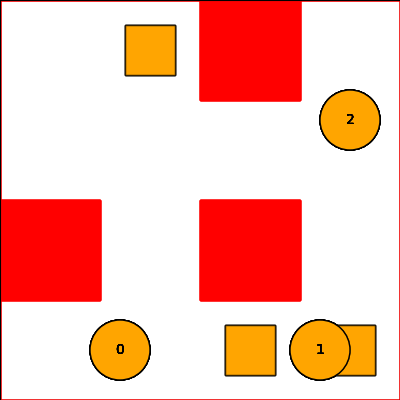
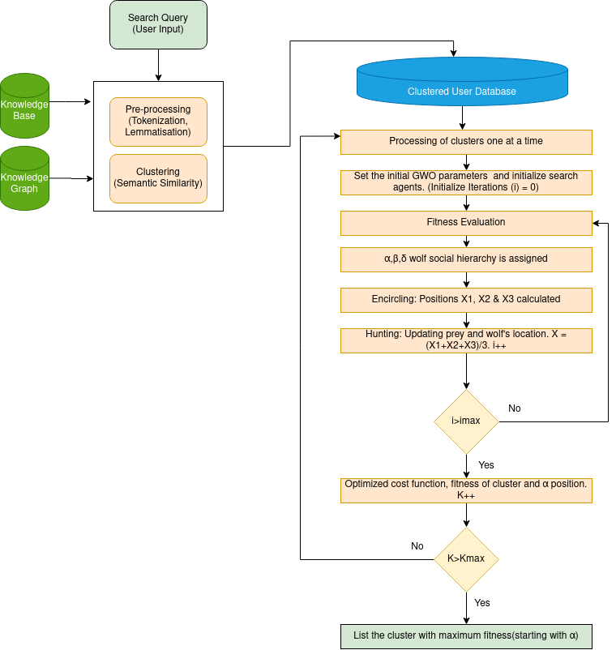
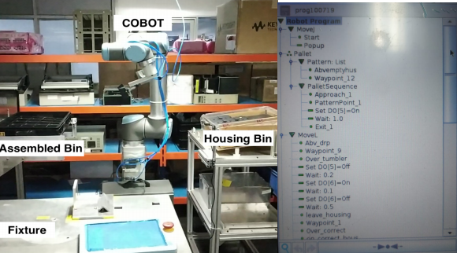

- Skills
- Research 2
- Research 1
- Industry 1
- Education
- Projects
Skills
{kind=link}
- Python Programming
{kind=link}
- Programming: C and C++
{kind=link}
- MATLAB (incl: simulink, deep learning toolbox)
{kind=link}
- Open CV: Computer Vision Library
{kind=link}
- DL Framework: Tenserflow

- DL Framework: Pytorch
{kind=link}
- ML Framework: Scikit learn
{kind=link}
- Raspberry PI (development Board)
{kind=link}
- Arduino (Development Board)
{kind=link}
- Robotics Operating System
{kind=link}
- (Operating System) Linux - Arch linux and Ubuntu
{kind=link}
- Solidworks
Research Internship 2
Indian Institute of Science Education and Research Bhopal, India

Implemented and tested collision avoidance multi-agent path finding algorithm for water based vessels. The algorithm was designed with accounting for COLREGS rules and guidance. Necessary literature survey on existing MAPF methods was done along with precious implementation on algorithms with COLREGS. The aim was to develop an algorithm that helps different sized vessels (boats and ships) to dock in the port efficiently, without colliding. Programmed and implemented CBS and Meta Agent-CBS on a simulation vessel in Robotic Operating System (ROS).
Shown below is the python implementation of CBS-MAPF:
Research Internship 1
National Institue of Technology Tircuchirappalli, India
Worked on a research project in the field of data science with Dr.Deepak Gerald. I have built an architecture with grey wolf meta heuristic optimization algorithm. In this project I am improving the search results in websites by classifying data based on context (features: adjectives/nouns)- and using a combination of optimization methods namely: correlation, semantic similarity and Euclidean distance- in the meta heuristic algorithm to rank the search results. At this stage of analysis, I have found that using GWO algorithm only offers about 5% improved search optimisation. And am analysing other potential algorithms (such as random forest)
Shown below is the implemented architecture:
Industry Internship 1
Continental Automotive, Bangalore

Programmed Universal Robotics (UR, 5) collaborative robot arm and implemented it in airbag control unit production line. Designed the end effector gripper (on Solidworks) to hold 3 components (capacitors, heat sink) with vacuum cups. My execution of UR collaborative robots in production lines, reduced the component refilling time by 30% and reduced the need for 2 operators.
Designed and made 4 grippers for the robotic arm with vacuum cups and actuators that made the robotic arm pick and place components. Designed trays that accommodated more output parts and increased the accessibility of the gripper. This reduced the frequency of transport of goods and increased efficiency.
Shown below is the collaborative robot is testing phase (before deploying in production line) & interface for control:
Education
National Institue Of Technology Tircuchirappalli, India
Pursuing my Bachelors of Technology in National Institute of Technology Trichy India (2018-2022). Here I am a part of Robotics and Machine Intelligence Club (official robotics club) and Currents (department symposium). Before which I completed my High Schooling in International School Hannover Region Germany.
Below table lists some of my POR's:
| Position | Organisation | Year |
|---|---|---|
| Researcher | Robotics & Machine Intelligence | 2019 - present |
| Prefect | Academic Council | 2018- 19 |
| Moderator | JuliaCon | 2020 |
| Design and guest lecture manager | Currents | 2018-20 |
Projects
Final Year Project [Jan 2021 -Ongoing]
{kind=link}
{kind=link}
Pepper Robot [Nov 2020 -Ongoing]
Below is an implementation of pepper (before COVID):
MARKO [Nov 2019 -May 2020]
2DOF Maze Solving robot arm [Aug 2019 -Dec 2019]
Eyantra [Dec 2019 -Jan 2020]